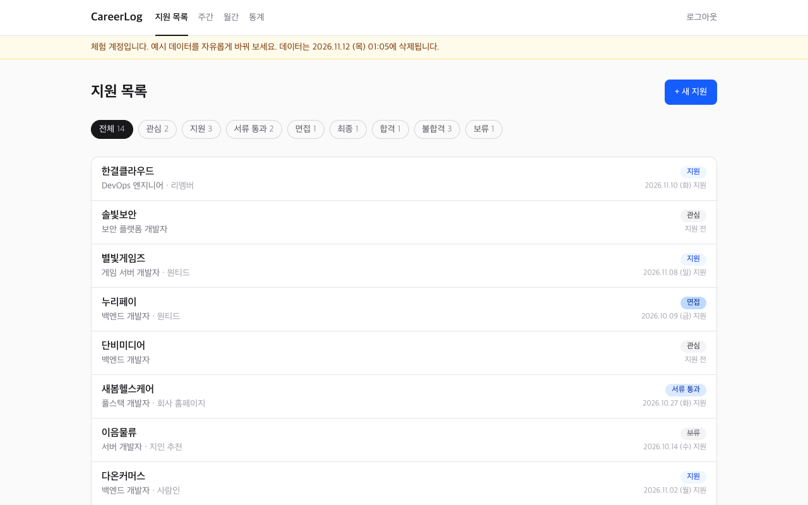
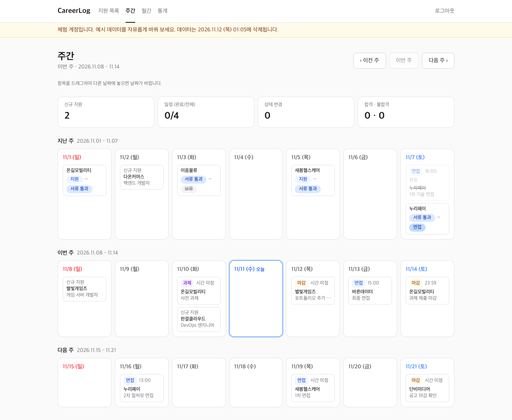
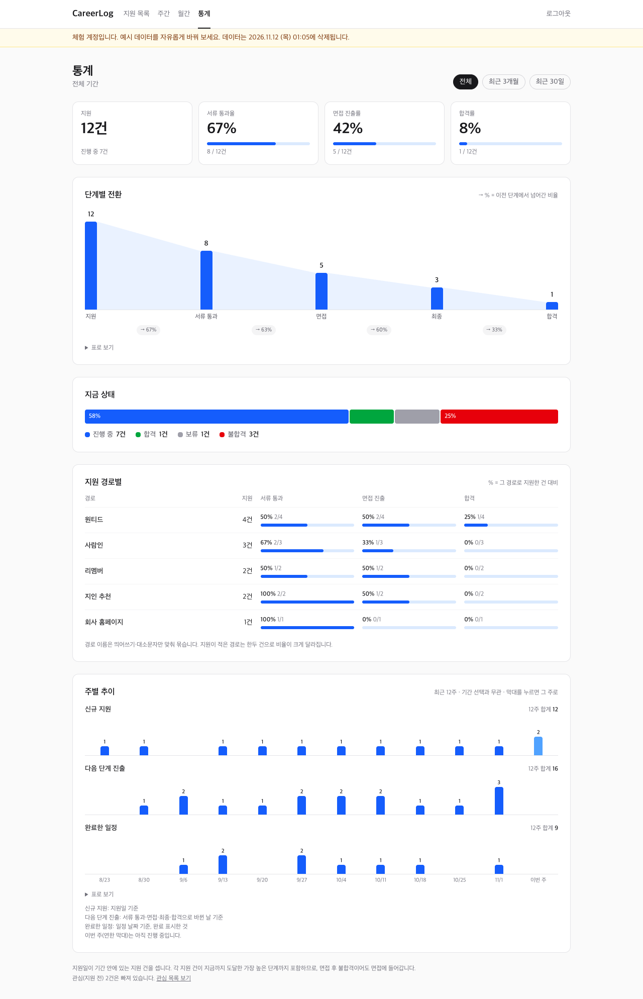
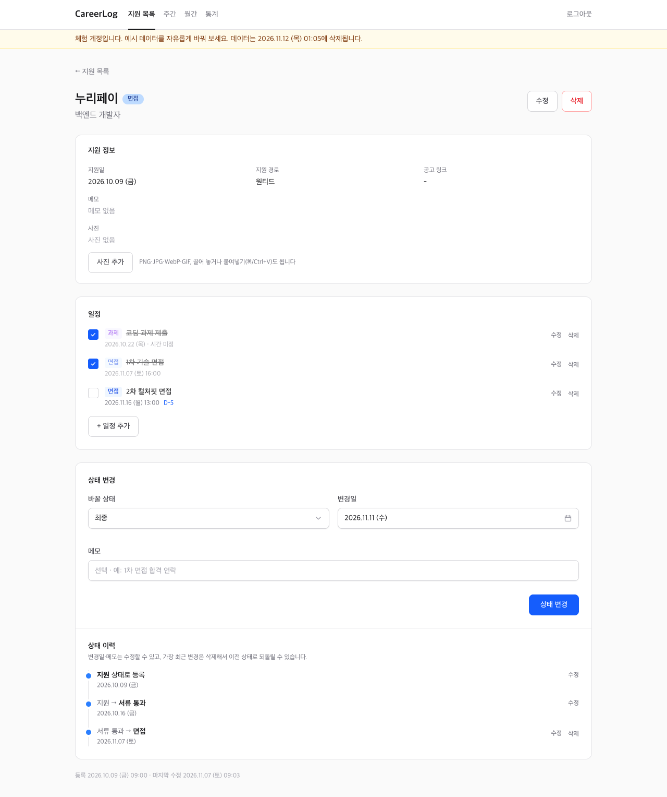
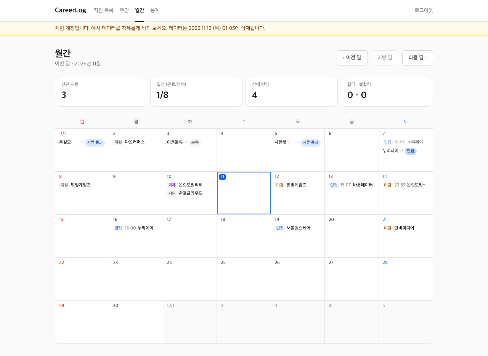

지원한 회사와 진행 상황, 면접 일정을 한곳에 모으고 주간·월간 달력과 통계로 흐름을 보는 이직 활동 기록 웹앱. 실제 이직 준비에 쓰려고 기획부터 배포·운영까지 혼자 진행했습니다.
로그인 화면에서 체험하기를 누르면 방문자 전용 체험 공간(예시 데이터 포함)이 만들어지고, 24시간 뒤 자동으로 지워집니다.
구직 활동을 하다 보면 지원한 회사, 서류 결과, 면접 일정이 메모·메일·캘린더에 흩어집니다. CareerLog는 이를 한 화면에서 관리하고, 주 단위로 흐름을 돌아보기 위해 만든 웹앱입니다. 맥·윈도우·폰 어디서든 접속해 쓰도록 웹으로 만들었고, 포트폴리오로 공개하면서 계정 분리와 체험 모드를 추가했습니다.

| 화면 | 내용 |
|---|---|
| 지원 목록 | 상태별 필터, 지원 건 등록·수정·삭제 |
| 상세 | 상태 변경과 변경 이력(날짜·메모 수정, 최근 변경 되돌리기), 면접·과제·마감 일정과 D-day, 사진 첨부(끌어 놓기·붙여넣기, 브라우저에서 축소) |
| 주간 | 지난주·이번 주·다음 주 달력. 항목을 끌어다 놓으면 날짜 변경(폰은 길게 눌러 끌기) |
| 월간 | 한 달 달력과 월 요약. 좁은 화면에서는 항목이 있는 날만 목록으로 표시 |
| 통계 | 단계별 전환 퍼널, 현재 상태 분포, 지원 경로별 성과, 최근 12주 주별 추이 |




별도 API 서버 없이 Next.js 한 프로젝트에 화면과 데이터 처리를 담았습니다. 페이지는 서버 컴포넌트에서 DB를 바로 읽고, 쓰기는 Server Actions로 처리해 Vercel 한 곳에 배포합니다.
작은 앱이지만 데이터 정합성과 계정 격리는 실서비스 수준으로 다뤘습니다.
Neon HTTP 드라이버는 대화형 트랜잭션을 지원하지 않아, 여러 테이블을 함께 바꾸는 작업(상태 변경+이력, 체험 계정+예시 데이터)을
WITH CTE 한 문장으로 작성. 독립 쿼리는 db.batch로 묶음.
상태는 changeStatusWithHistory 한 SQL 문장으로만 변경. 이력이 빠짐없이 남고,
통계 퍼널은 이 이력을 기준으로 "도달한 가장 높은 단계"를 계산.
모든 조회·변경 함수가 첫 인자로 계정 id를 받아 누락 시 타입 검사에서 차단. 다른 계정 id는 0행(404)으로 처리하고, 체험 계정 두 개로 교차 호출 시 데이터가 바뀌지 않음을 대조군과 함께 검증.
퍼널·막대·추이 그래프를 HTML·SVG로 직접 구현. 말풍선은 마우스와 키보드로 모두 열리고, 모든 그래프에 "표로 보기" 제공.
날짜 계산을 순수 함수로 분리해 단위 테스트. 토요일 23:30 ↔ 일요일 00:00 같은 주 경계 케이스까지 포함.
방문자마다 예시 데이터가 든 독립 체험 계정을 생성하고 24시간 뒤 자동 삭제. 사진은 Vercel 함수에 디스크가 남지 않아 DB(bytea)에 저장.
AI 코딩 에이전트(Claude Code)와 함께 개발하되, 계획 승인·검증·운영 반영은 사람이 통제하는 절차를 만들었습니다.
에이전트가 작업 시작 시 가장 먼저 읽는 파일에 프로젝트 규칙, 겪은 함정, 기능별 진행 기록을 누적.
기능마다 계획을 먼저 세우고 승인한 뒤 구현. 기획 문서(docs/PLAN.md)로 범위와 "하지 않을 것"을 명시.
pnpm check(lint·타입·단위 테스트)와 headless Chrome E2E로 확인. E2E에서는 화면의 숫자를 SQL로 직접 계산한 값과 대조.
마이그레이션 생성은 자동화하되, 운영 DB 적용은 사람이 직접 수행.